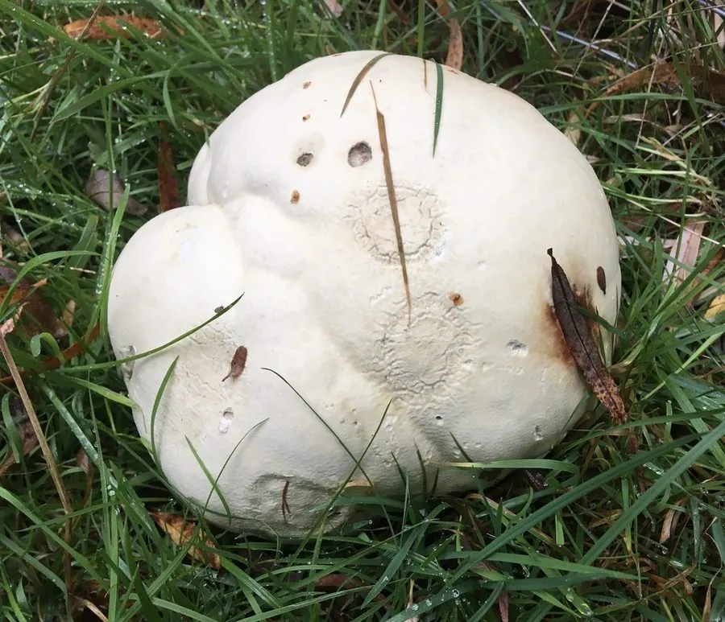

真菌 · 真菌界
大马勃 Calvatia gigantea

能长到足球般大的马勃，幼时白色可食，成熟后内部变成褐色孢子粉，轻轻一碰就会喷出烟雾般的孢子云。
- 分类
- 门担子菌门纲伞菌纲目伞菌目科蘑菇科属马勃属
- 栖息环境
- 草地、林缘、牧场和农田，夏秋季出菇
- 地理分布
- 温带地区广泛分布，中国北方和西南地区有分布记录
- 保护级别
- 暂无评估（IUCN 未评估，中国未列入重点保护名录）
物种志
大马勃是担子菌门伞菌目的真菌，子实体呈球形或近球形，直径可达 20–50 cm，甚至更大，是体形最大的马勃之一。幼时表面白色，光滑而有弹性，内部白色、质地均匀；成熟后表面变为黄褐色，内部变成褐色至黑褐色的粉末状孢子团。它没有菌盖、菌褶和菌柄。
大马勃多生于草地、林缘、牧场和农田，夏秋季出菇，在温带地区广泛分布，中国北方和西南地区有记录。幼嫩时菌肉白色、质地致密，可以切片炒食，但必须确认内部完全洁白均匀，一旦出现褐色或紫色就不能食用。成熟后内部变成孢子粉，被触碰时会从裂口喷出烟雾般的孢子云，借风力传播孢子。大马勃在传统上也被用作止血药。
形态与习性
- 子实体球形或近球形，直径可达 20–50 cm
- 幼时表面白色光滑，内部白色均匀，可食
- 成熟表面黄褐色，内部变成褐色孢子粉
- 孢子触碰时从裂口喷出烟雾般的孢子云
- 生境草地、林缘、牧场和农田
- 食用性幼嫩洁白时可食，内部变色后不可食用
- 药用传统上用作止血药
趣味知识
- 大马勃能长到足球甚至更大，是体形最大的马勃之一。
- 成熟后内部变成褐色孢子粉，一碰就会喷出烟雾般的孢子云。
- 幼嫩洁白的大马勃可以食用，但内部变色后就不能吃了。
- 大马勃在传统医学中被用作止血药。